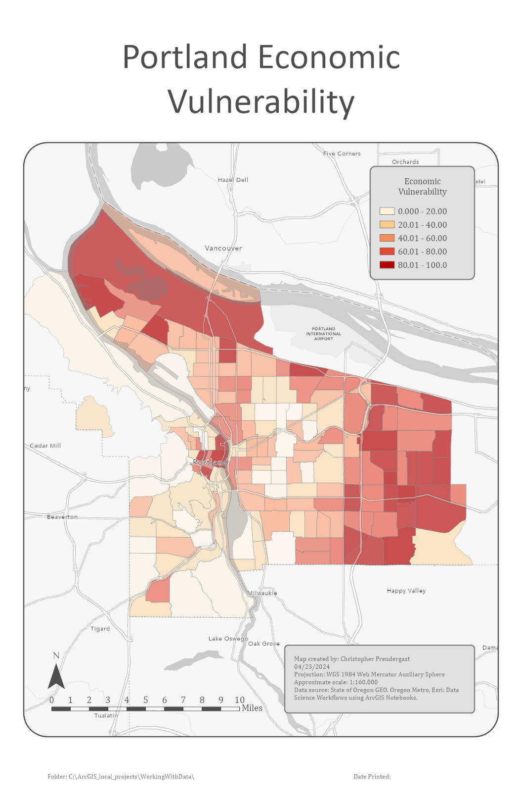
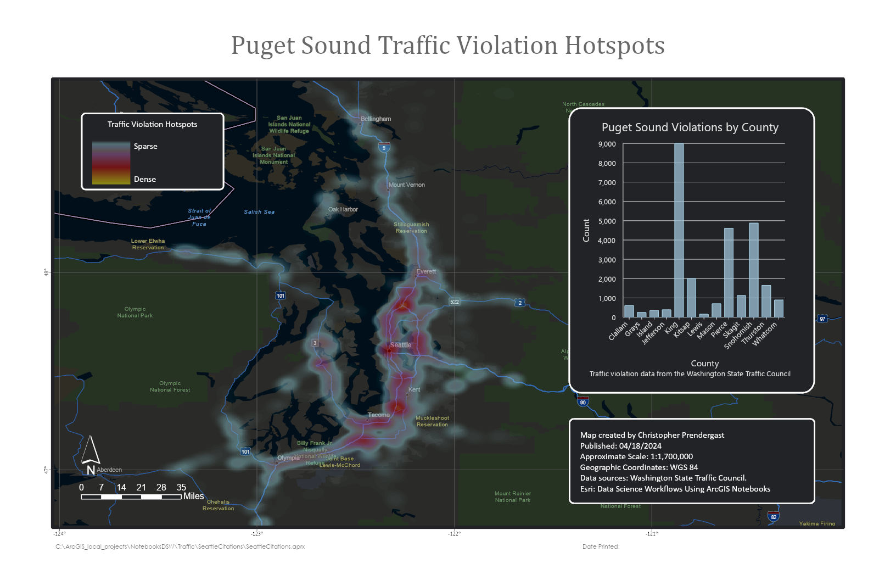

{kind=link}

Map #1
More details for map #1.
Map of economic vulnerability in Portland, Oregon. From Esri: Data Science Workflows with Nothbooksusing ArcGIS Notebooks.

Map showing hotspots for traffic violations in the Puget Sound region of Wahington state. From Esri: Data Science Workflows using ArcGIS Notebooks.

Images of more maps -- click on each for more details.
More details for map #1.

More details for map #2
A collection of ArcGIS StoryMaps.
Analysis of the accessibility of open space in Santa Clara County, California.
Static maps of open space accessibility in Santa Clara County, California
Analysis of homelessness in Santa Clara County, California.
Record of visits to local open spaces and parks for California ecology class at Foothill College, Los Altos, California.
Analysis of suitable sites for a new farmers market within the San Francisco Bay Area, California.
Hot spot analysis conducted for the fictious Zap! Video Games Corporation and BigBucks Malls Inc. to identify target markets within the San Francisco Bay Area for new product releases.